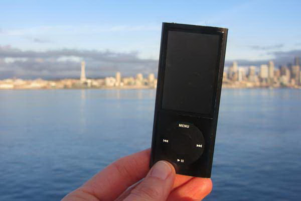

Welcome to the place to show off your iPod, wherever you might be. Wanna join the fun? All you need is any iPod, from the early classic iPod to the latest iPod Nano, the smallest iPod Shuffle to the largest iPod Photo, and a digital camera. Just take a snapshot of your iPod in your favorite location and we'll be glad to post it on myPod. So, what are you waiting for?
Me and my iPod in Seattle! You can see rain clouds and the Space Needle. You can't see the 629 coffee shops.

Ось кілька фотографій з iPod в околицях Біргмінгема. Очевидно, що у нас тут є кілька пристрасних людей, які полюбляють свої iPod.Погляньте на класичну червону британську телефонну будку!